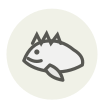

Brown scorpionfish
Rascasse brune
| Latin name | Scorpaena porcus |
|---|---|
| Family | Fish & seafood |
| Origin | Mediterranean rocky shores |
| Season (France) | All year |
| Flavour | Marine · Umami · Rich · Mild |
| Typical price (France) | 10–18 €/kg |
What it is
The charter drawn up by Marseille restaurateurs in 1980 makes it compulsory in a bouillabaisse - a soup defined, unusually, by a document. The fish is nearly all head: the fillet yield is derisory, and that is exactly the point, because the head is where the gelatine and the flavour are.
In the kitchen
Never fillet it - head, bones and all go into the pot, then through a mouli and a sieve. Press hard on the solids: most of what you paid for is in the head, and a soup strained gently leaves it behind.
Goes with
Saffron Fennel Tomato Garlic Olive oil Orange Potato Leek
Same species
Something wrong here, or missing? Tell us